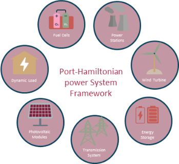
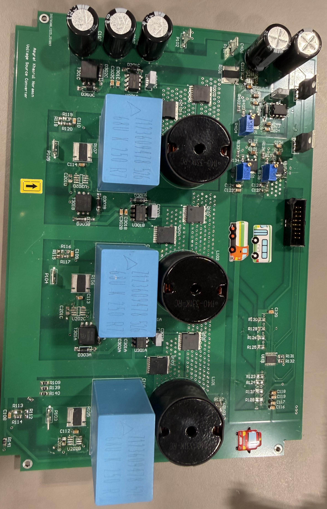
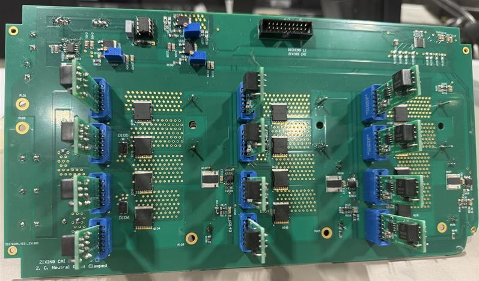
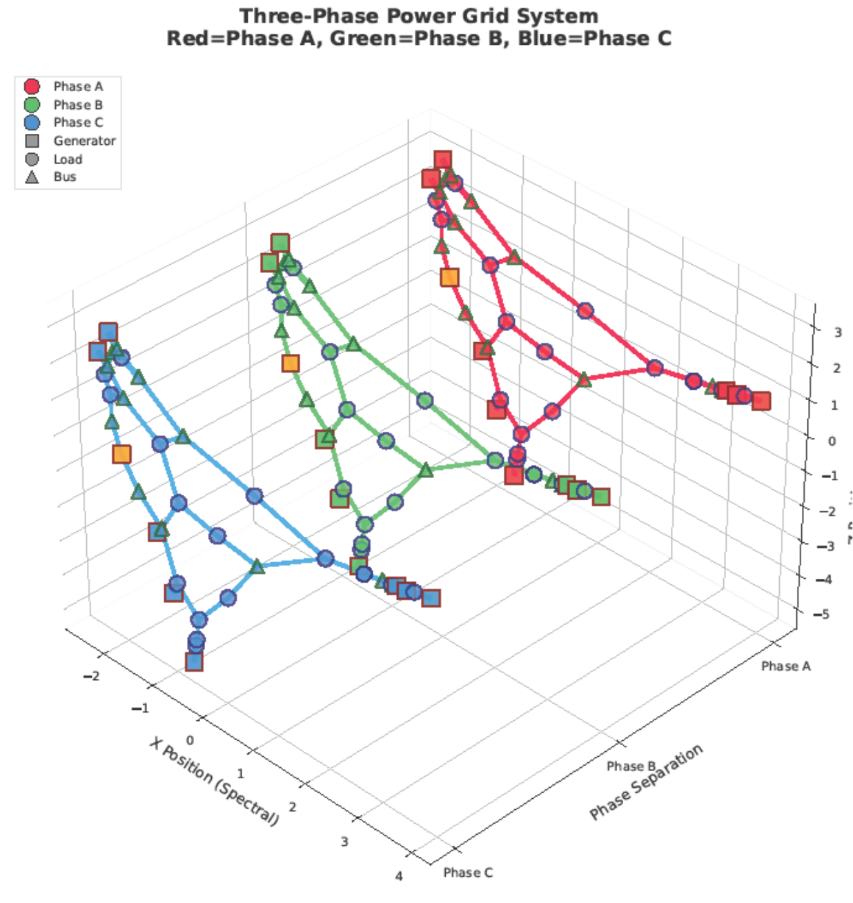
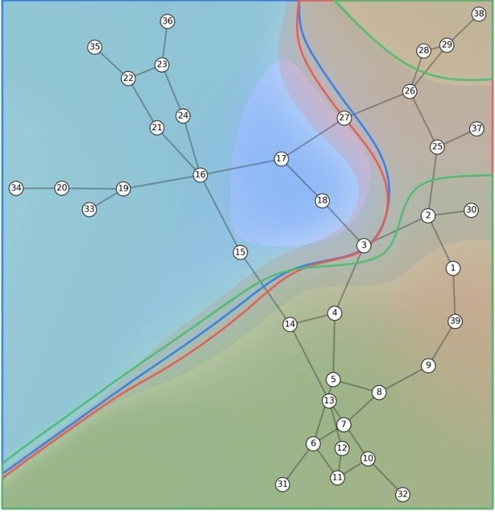
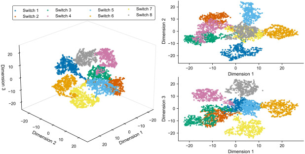
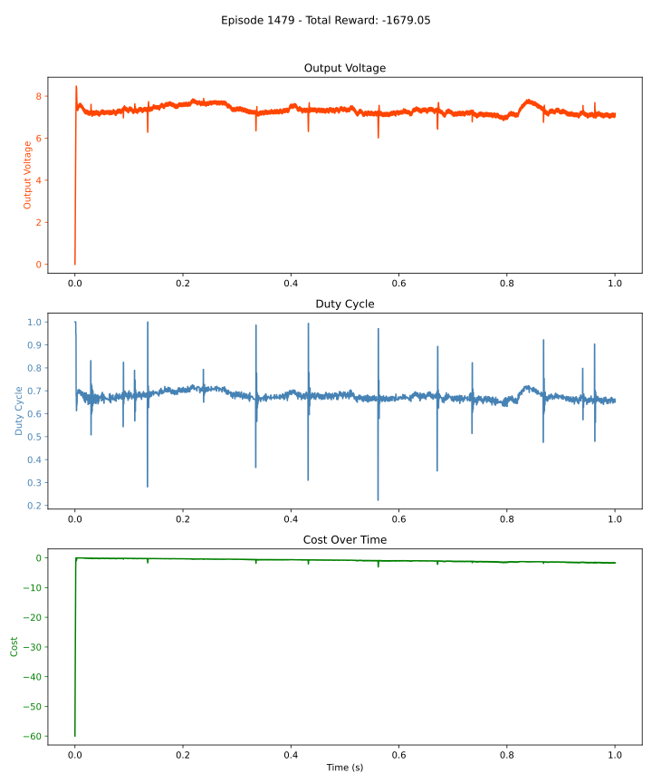
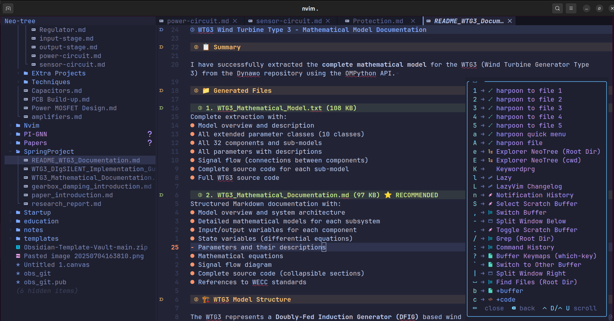
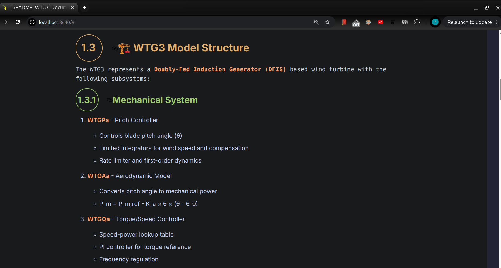
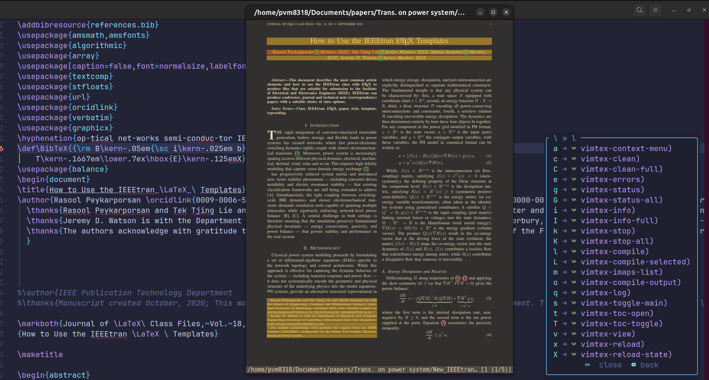

Projects
- PHPS — Port-Hamiltonian Power System Simulator
- Microgrid Hardware Testbed
- TCP PowerFactory-MATLAB-Python Bridge
- PIGNN — Physics-Informed Graph Neural Networks
- Modular Contingency Analysis for Power Systems
- Fault Classification with Deep Learning
- Reinforcement Learning on Python-MATLAB TCP Bridge
- Neovim Config (LazyVim + LaTeX + Obsidian)
PHPS — Port-Hamiltonian Power System Simulator
A power system transient stability simulator that compiles JSON network descriptions into native C++ DAE solvers. Each grid component declares its own states, ports, parameters, and dynamics; the resulting system is integrated with SUNDIALS IDA at native speed — no Python overhead during simulation.


Microgrid Hardware Testbed
A collection of Altium Designer PCBs forming a modular, sensor-rich microgrid testbed: an isolated Buck converter, three- and four-leg voltage source converters, a Neutral Point Clamped inverter, and a line-commutated converter. Each board carries onboard current sensing and an I2C/SPI link to an external MCU controller.



TCP PowerFactory-MATLAB-Python Bridge
A co-simulation framework that links DIgSILENT PowerFactory, MATLAB/Simulink, and Python through a TCP-based communication layer. The project enables concurrent simulation workflows where control, system studies, and data exchange run in sync across tools for rapid prototyping and validation.


PIGNN — Physics-Informed Graph Neural Networks
A research framework that augments physics-based grid models with learnable correction terms inside a graph neural network. Multi-phase grids are encoded as graphs and trained to capture parasitics and unmodeled dynamics while preserving energy conservation, power balance, and stability guarantees.


Modular Contingency Analysis for Power Systems
A modular Python framework for N-1 and N-2 contingency analysis on power systems using DIgSILENT PowerFactory. The pipeline generates scenarios, solves post-contingency load flows, computes voltage sensitivities, builds Y-matrices from impedance data, and stores everything as structured HDF5 for downstream analysis.

Fault Classification with Deep Learning
Deep learning models for fault detection and diagnosis in four-leg inverters. The companion dataset is published on Kaggle as four-leg inverter fault detection. This work underpins the IEEE KPEC 2023 paper on the same topic.


Reinforcement Learning on Python-MATLAB TCP Bridge
An earlier prototype that runs a Simulink model as a reinforcement learning environment and synchronously streams state and actions between Simulink and Python over TCP. Predecessor to the parallel DDPG framework above.


Neovim Config (LazyVim + LaTeX + Obsidian)
A personal Neovim setup based on LazyVim with plugins for LaTeX authoring, Obsidian note-taking, and GitHub Copilot. Includes the Zathura PDF viewer config used as the LaTeX preview target.



Selected Publications
- Intelligent fractional order cascade control for wind energy conversion in wind farms
- Low-voltage solid state DCCB design based on bypassed bidirectional thyristor-capacitor suppressor
- Bidirectional Solid State Circuit Breaker with Passive Surge Absorber for LV Applications
- Hierarchical switch fault diagnosis in four-leg inverters of stand-alone wind energy conversion systems
- Adaptive mixed time-state dependent distributed event-triggered consensus protocol of a DC microgrids cluster
- A novel model-free defense scheme for power systems stability under cyber attacks
- Data-driven parameter identification of synchronous generators with state consistency and grid decoupling
- Mitigating GFM-induced battery stress with a VDCM-controlled hybrid energy storage
- Model order reduction for control and stability analysis in a DC microgrid
- State identification of DC microgrids using probabilistic methods in the presence of noise
- A modified Class-D resonance inverter for operating in load-independent condition
A novel intelligent fractional order cascade control to enhance wind energy conversion in wind farms: A practical case study
IEEE Transactions on Energy Conversion · 2025
DOI: 10.1109/TEC.2025.3543144Low-voltage solid state DCCB design based on bypassed bidirectional thyristor-capacitor suppressor
IEEE Transactions on Power Electronics · 2024
DOI: 10.1109/TPEL.2024.3463734Bidirectional Solid State Circuit Breaker with Passive Surge Absorber for LV Applications
IEEE Journal of Emerging and Selected Topics in Power Electronics · 2025
DOI: 10.1109/JESTPE.2025.3554206Hierarchical switch fault diagnosis based on transformer algorithm in four-leg inverters of stand-alone wind energy conversion systems
International Journal of Electrical Power & Energy Systems · 2026
DOI: 10.1016/j.ijepes.2026.111607Adaptive mixed time-state dependent distributed event-triggered consensus protocol of a DC microgrids cluster
Electric Power Systems Research · 2025
DOI: 10.1016/j.epsr.2025.111849A Novel Model-Free Defense Scheme for Power Systems Stability Under Cyber Attacks
IET Generation, Transmission & Distribution · 2026
DOI: 10.1049/gtd2.70218Data-Driven Parameter Identification of Synchronous Generators: A Three-Stage Framework with State Consistency and Grid Decoupling
Sensors · 2026
DOI: 10.3390/s26072024Mitigating GFM-Induced Battery Stress with a VDCM-Controlled Hybrid Energy Storage
IEEE PES International Meeting (PES IM) · 2026
DOI: 10.1109/PESIM67009.2026.11438954Model order reduction for control and stability analysis of complex dynamical systems in a DC microgrid
IEEE Power & Energy Society General Meeting (PESGM) · 2024
DOI: 10.1109/PESGM51994.2024.10689165State identification of DC microgrids using probabilistic methods in the presence of noise
IEEE PMAPS · 2024
DOI: 10.1109/PMAPS61648.2024.10667324A modified Class-D resonance inverter for operating in load-independent condition
11th Power Electronics, Drive Systems, and Technologies Conference (PEDSTC) · 2020
DOI: 10.1109/PEDSTC49159.2020.9088381Skills, Teaching & Mentorship
Hardware and software skills built across a master's thesis on Class-D resonant soft-switching inverters, a PhD in power electronics and machine learning for power systems, and an open hardware microgrid testbed designed and brought up end-to-end.
Power Electronics — Analog & Digital Design
PCB Design & EDA
Circuit-Level Simulation
Lab & Instrumentation
Currently designing a custom impedance analyser for high-power converters and medium-power grid applications.
Programming & Tools
Machine Learning & Data
Teaching, Supervision & Mentorship
- Teaching Assistant — multiple undergraduate and postgraduate courses across power systems, power electronics, and control at Auckland University of Technology.
- Supervision — 18 students supervised: 5 final-year theses and 13 one-semester research projects.
- Peer Mentor (AUT) — ongoing technical and academic mentoring for bachelor's, master's, and PhD students.
- International collaboration — co-authored publications with researchers across multiple universities and countries (see Publications).
Co-Founder — Circuit Intelligent
Co-founder of Circuit Intelligent, an AI-assisted circuit-design platform for students and early-career engineers. The tool pairs classical EDA workflows with LLM-driven guidance to shorten the path from design intent to a working schematic.
About Me
I'm a PhD candidate at Auckland University of Technology, working at the intersection of power electronics, microgrid control, and machine learning for power systems. My research spans fault detection in power converters, data-driven system identification, model order reduction for DC microgrids, and physics-informed graph neural networks for grid dynamics.
Alongside my publications, I build the tools that support the work — compiled C++ DAE simulators, reinforcement learning environments coupled to MATLAB/Simulink, contingency analysis pipelines for DIgSILENT PowerFactory, and an open hardware microgrid testbed designed in Altium.
My Resume
Beyond Work
When I'm not in the lab you'll find me hiking, mountain climbing, or camping somewhere in the New Zealand bush. Off the trail I cook, shoot photos, and play electric lead guitar — metal mostly. Art and music keep my engineering brain honest.